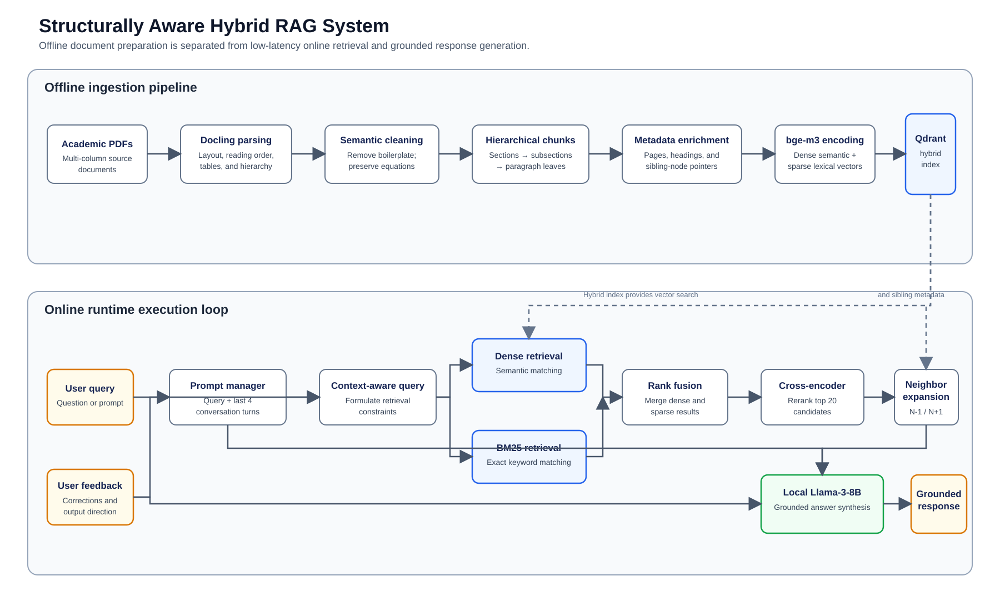
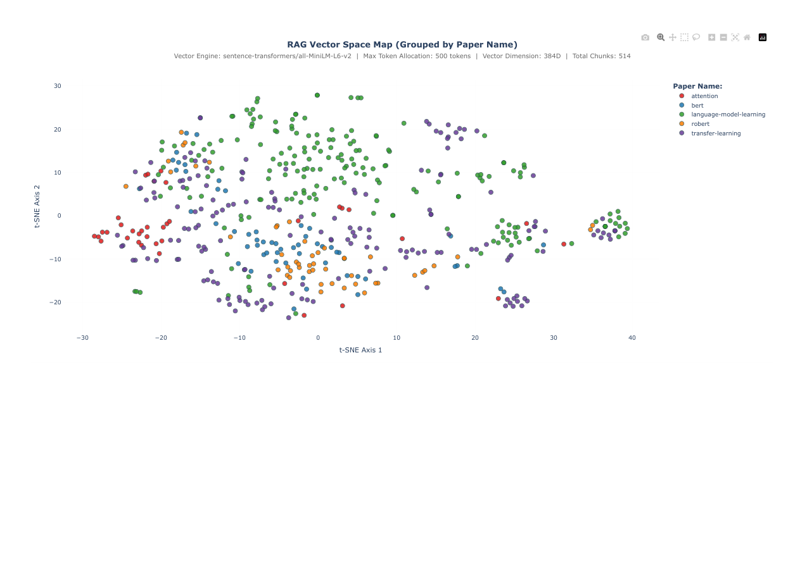
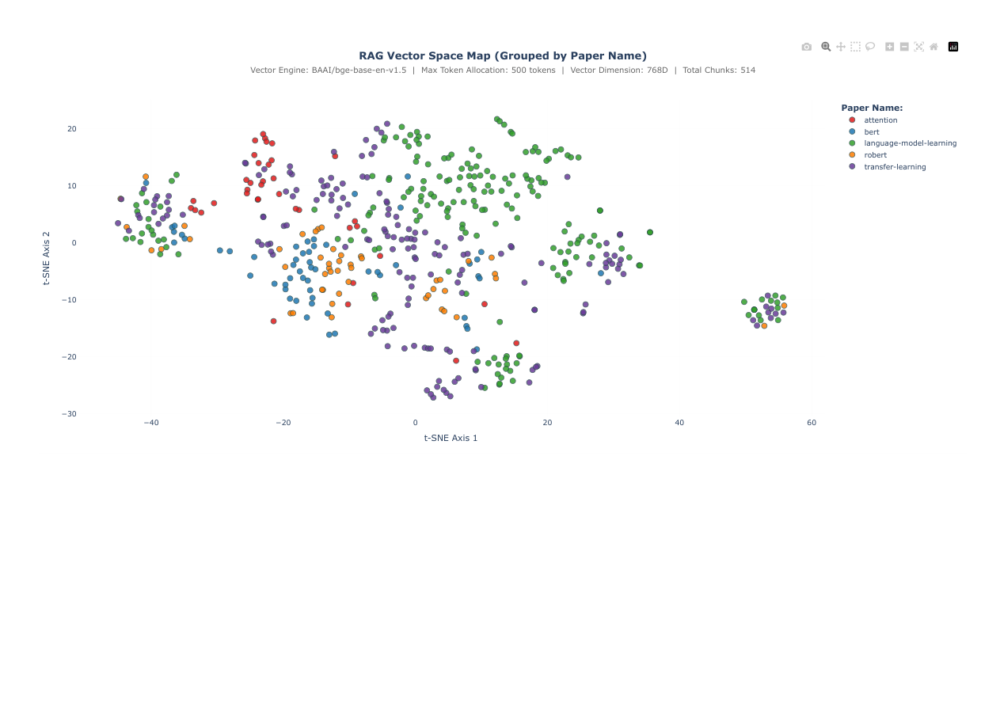

Engineering a Structurally Aware RAG System for Academic Literature
An evidence-grounded retrieval system for five foundational research papers, from layout-aware ingestion to conversational answers and reproducible evaluation.
1. Project overview
Academic papers are difficult RAG inputs because their meaning depends on reading order, headings, tables, formulas, and relationships between neighbouring paragraphs. This project ingests five Transformer-era papers, converts them into structured and traceable chunks, stores their embeddings in Qdrant, and answers questions using retrieved evidence.
Objective
Build a conversational RAG application that transforms supplied academic PDFs into reliable, traceable answers. The application must preserve useful document structure, retrieve evidence for a question, retain the most recent four completed interactions, and provide a repeatable way to evaluate retrieval and answer quality.
What is delivered
The repository delivers the complete working path, rather than only a prototype retrieval notebook:
- Ingestion and indexing: Docling conversion, cleaning, structural HybridChunker splitting, BGE-base embedding, and persistent Qdrant storage with paper, page, section, and chunk metadata.
- Grounded chat: dense retrieval, text-match candidate retrieval, cross-encoder reranking, adjacent-chunk expansion, a four-turn context window, basic guardrails, and provider-configurable LLM generation.
- Usable and repeatable operation: Gradio chat and evaluation applications, uv-based setup, fast re-ingestion from saved Docling JSON, test data, saved evaluations, and embedding-space visualisations.
Reproducible operation
The README documents the repository setup and the commands for ingestion, chat, evaluation, and visualisation. Central settings keep model, vector dimension, retrieval limits, memory, and LLM-provider choices explicit.
.docling.json representation. JSON mode loads these generated documents directly, avoiding repeated PDF parsing when the corpus has not changed and making routine re-ingestion substantially faster.Source corpus
Attention Is All You Need, BERT, GPT-3, RoBERTa, and T5 are included as the five source documents. The later test suite spans definitions, mechanisms, direct facts, motivations, and multi-hop questions across this corpus.
2. Implementation-aligned system architecture
The diagram shows the actual code path. The upper lane prepares and indexes the corpus once; the lower lane runs for every user query.

What happens during ingestion
1. Understand the PDF. Docling extracts text in reading order and retains document signals such as headings, tables, formulas, and figure images. Fresh PDF parsing also saves reusable Docling JSON for the fast path.
2. Prepare reliable passages. Cleaning removes recurring publication noise; HybridChunker then groups text within its heading context and a 500-token target.
3. Make it searchable. Each chunk is embedded by BGE-base into 768 dimensions and stored in Qdrant together with its source-paper, page, section, and chunk identifiers.
What happens for a question
1. Validate and interpret the request. Basic guardrails reject invalid or injection-like queries, response-refinement follow-ups are handled without retrieval, and the router receives the question plus only the latest four completed exchanges.
2. Find the best evidence. Dense similarity and text-match candidates are merged, deduplicated, and reranked by a cross-encoder; neighbouring chunks are included where they add local context.
3. Generate a grounded response. Retrieval evidence is checked, instruction-like retrieved text is sanitized, and the selected LLM provider receives the question, retained conversation context, and evidence-rich passages to produce the answer.
3. Design decisions
| Component | Choice | Reason |
|---|---|---|
| PDF understanding | Docling | Preserves layout, reading order, table structure, formulas, and heading hierarchy in academic PDFs. |
| Cleaning | Regex + BeautifulSoup | Removes recurring headers, footers, emails, and publication boilerplate that would otherwise pollute embeddings. |
| Chunking | Docling HybridChunker | Uses structural context and token limits instead of arbitrary character boundaries. |
| Embeddings | BAAI/bge-base-en-v1.5 | Best recorded rank metrics in the available 500-token comparison. |
| Storage | Qdrant | Persistent local vector storage with payload metadata and similarity search. |
| Precision stage | MS MARCO MiniLM cross-encoder | Scores question and chunk jointly after candidate retrieval to reduce false positives. |
| Generation | Configurable LiteLLM provider | Supports local Ollama and hosted Groq, Google, or OpenAI models without changing retrieval code. |
| Guardrails | Rule-based runtime checks | Rejects invalid or prompt-injection-like queries, avoids generation without evidence, sanitizes retrieved context, and catches empty model responses. |
4. Experimental methodology and evidence
Experiments varied preprocessing, splitter style, chunk size, embedding model, and retrieval enhancements. Retrieval quality is measured with Mean Reciprocal Rank (MRR), nDCG, and keyword coverage. Answer quality is assessed with an LLM judge for accuracy, completeness, and relevance.
| Experiment | What varied | Evidence |
|---|---|---|
| Chunk-size sweep | 500 to 3,300 characters; 333 to 1,000 tokens | Saved MiniLM evaluation dashboards, 50-question runs. |
| Preprocessing | Raw vs cleaned Markdown | Saved raw/clean vector visualisations and evaluation outputs. |
| Encoder comparison | MiniLM 384D vs BGE-base 768D | Saved 500-token visualisations and evaluation dashboards. |
| Retrieval improvements | Reranking and neighbour context expansion | Optimised 50-question evaluation outputs. |
Interpretation
- Very small character chunks fragment technical arguments and performed poorly.
- Token-aware chunks near 500 tokens balanced rank quality and keyword coverage.
- Reranking plus neighbour expansion produced the largest measured improvement.
Embedding-space inspection
Alongside the scored retrieval runs, 500-token chunks were projected into two dimensions for qualitative inspection. These plots help check whether chunks form meaningful local neighbourhoods; they are not used as a standalone measure of retrieval quality.


5. Results and selected configuration
| Configuration | Tests | MRR | nDCG | Coverage |
|---|---|---|---|---|
| MiniLM, cleaned Markdown, 500 characters | 50 | 0.4487 | 0.5200 | 73.3% |
| MiniLM, cleaned Markdown, 2,500 characters | 50 | 0.6091 | 0.6329 | 72.8% |
| MiniLM, cleaned Markdown, 500 tokens | 50 | 0.6254 | 0.6451 | 91.7% |
| MiniLM, optimised retrieval and expansion | 50 | 0.7504 | 0.7570 | 89.3% |
| BGE-base, optimised retrieval and expansion | 50 | 0.7755 | 0.7768 | 89.0% |
MRR progression across selected 50-question experiments
6. Answer-quality evaluation
Retrieval metrics establish whether the expected evidence is present and well ranked; they do not establish that the final answer is correct, complete, or focused. The answer-evaluation flow therefore runs the complete RAG answer path for every question, then asks an LLM judge to compare the generated answer with the curated reference answer.
What is evaluated
For each of the 50 questions, the system routes the query, retrieves and reranks context, expands neighbouring chunks, and generates an answer. The judge receives the question, generated answer, and reference answer and returns structured feedback plus three 1-to-5 scores.
Why it is run selectively
Answer evaluation is materially more expensive than retrieval-only evaluation. Each non-greeting test uses an LLM call for query routing, an LLM call to generate the answer, and a hosted LLM-as-a-judge call. Two full 50-question runs were recorded to compare the optimised MiniLM and BGE-base configurations.
| Metric | Judge instruction | Scale |
|---|---|---|
| Accuracy | Factual correctness against the reference answer. Any wrong answer must receive 1. | 1 = wrong; 5 = perfectly accurate |
| Completeness | Whether every important part of the reference answer is addressed. | 1 = key information missing; 5 = all reference information included |
| Relevance | Whether the response directly answers the specific question without unnecessary material. | 1 = off-topic; 5 = direct and focused, with no extra information |
AnswerEval response containing feedback and the three scores. This is a custom, reference-answer-based evaluation, not RAGAS. Scores remain model-dependent and should be interpreted alongside retrieval metrics and spot checks.Recorded 50-question results
| Optimised configuration | MRR | nDCG | Coverage | Accuracy | Completeness | Relevance |
|---|---|---|---|---|---|---|
| all-MiniLM-L6-v2, 384D | 0.7710 | 0.7726 | 89.8% | 5.00 / 5 | 5.00 / 5 | 3.90 / 5 |
| BAAI/bge-base-en-v1.5, 768D | 0.7641 | 0.7757 | 90.2% | 4.94 / 5 | 4.96 / 5 | 3.86 / 5 |
7. Evaluation and limitations
Evaluation
The dashboard evaluates all entries in src/evaluation/tests.jsonl. The custom framework reports retrieval MRR, nDCG, and keyword coverage, then separately reports reference-answer-based LLM-judge scores for accuracy, completeness, and relevance. It is not presented as RAGAS.
Reproducibility and operation
The README documents uv sync, fast JSON-based ingestion, full PDF parsing, Gradio chat, the evaluation dashboard, and embedding-space visualisation. Runtime settings centralise the embedding model, vector dimension, retrieval limits, memory window, provider choice, and timeout. The selected provider must be configured through environment variables; API keys are intentionally excluded from version control.
Runtime guardrails
The chat path includes simple guardrails before and after generation. User input is checked for minimum and maximum length and common prompt-injection patterns; retrieval must return enough evidence before generation; retrieved context is sanitized before prompt construction; and blank model outputs are replaced with a safe fallback. Follow-up requests that ask to shorten, rewrite, or reformat the previous answer are handled as refinements of the previous response instead of triggering unrelated retrieval.
Image extraction and multimodal enhancement opportunity
The full PDF parsing setup extracts figure images into docs/extracted_images. They are retained as useful source artefacts, but are not currently passed to an LLM or converted into text summaries before indexing. During local experimentation, the Llama setup processed technical diagrams slowly and produced generic descriptions that did not add useful retrieval evidence. A capable hosted vision model could create figure-aware, source-linked summaries before chunking, making diagrams and charts part of the searchable knowledge base.
Known limitations
- BM25 sparse retrieval and reciprocal-rank fusion are not implemented.
- Local Ollama may be slower on CPU; provider, output length, and timeout are configurable.
- The guardrails are deterministic first-layer checks, not a complete moderation or policy-enforcement system.
- Feedback-driven context refinement remains a bonus extension.
8. Repository, setup, and experiment artefacts
The complete implementation is available at github.com/skdhanjal/rag-system. The repository README is the operational reference for prerequisites, provider credentials, configuration, and troubleshooting.
Setup and index the corpus
Clone the repository, run uv sync, then create a local .env with the selected LLM provider credentials. For the supplied corpus, use the cached fast path:
uv run python -m src.ingestion.ingestion_pipeline --loader json
Use --loader pdf --dir docs/pdfs only when PDFs change or a fresh Docling parse is required; this is slower because layout processing runs again.
Run and evaluate
Start the chat interface with uv run python src/chat_ui.py. Start the separate evaluation dashboard with uv run python src/eval_ui.py. Ingestion must complete before either application can retrieve from the local Qdrant collection.
Runtime choices—including embedding model, vector dimension, retrieval limits, memory window, and LLM provider—are centralised in src/config/settings.py.
Where the evidence is kept
| Repository location | Contents |
|---|---|
docs/eval_tests | Saved retrieval and answer-evaluation dashboards. The paired answer runs are under all-MiniLM-L6-v2/optimised and BAAI-bge-base-en-v1.5. |
docs/graphs | Embedding-space visualisations and related experimental graphs, including the 500-token MiniLM and BGE-base plots reproduced above. |
docs/parsed_json | Pre-parsed Docling documents used by the fast JSON ingestion path. |
docs/extracted_images | Figure images extracted during PDF parsing; preserved for inspection and future multimodal enrichment. |
src/evaluation/tests.jsonl | The curated 50-question evaluation set used by the current dashboard. |